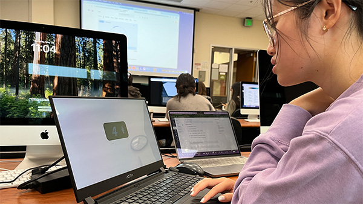
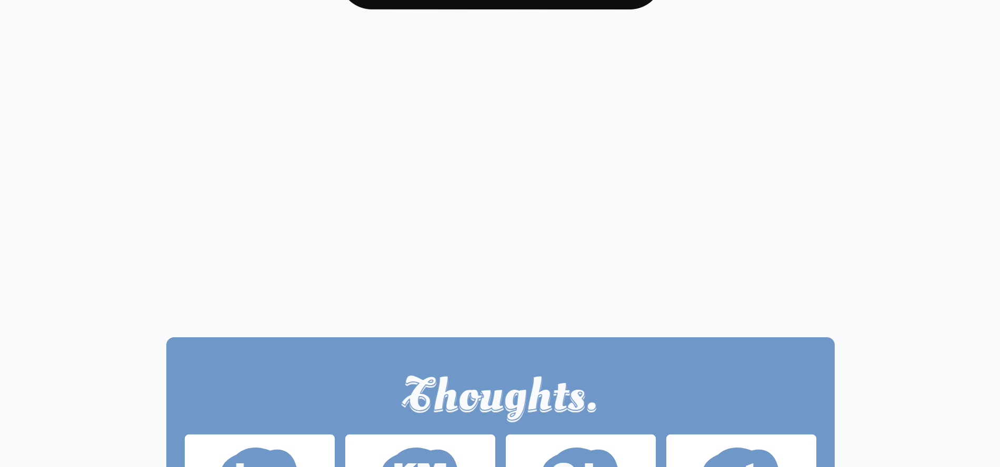

Usability Results
Waiting Screen Improvements

When users enter into the bordeom/waiting room there was the instinct to click around to find something to interact with. They were clicking around the timer and on the human icon inside the timer. One user keep reloading the page after 15-30 seconds so they never waited long enough for the exit button to appear. I will add more context to the goal of the waiting room by having a pop-up window explaining the value of boredom and how to be in the space of the room.
Home Screen Improvements

After opening the response section the screen scrolls down and a user can press the please button, which activates the the waiting room, but if they press the button while scrolled between the home and response section the screen is locked. I currently don't have a button that scrolls the user back up to the main home screen so I believe implementing a button to scroll back up for you will position the user to the right height to not have the screen get stuck.
Readability
I noticed one user having to lean in to be able to read their responses due to the font used being tall and skinny. One other peer mentioned how the font should be bigger. I will test with bigger text size and experiment with another font.